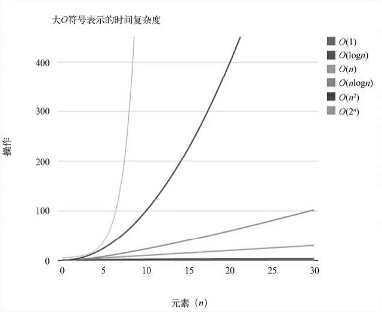
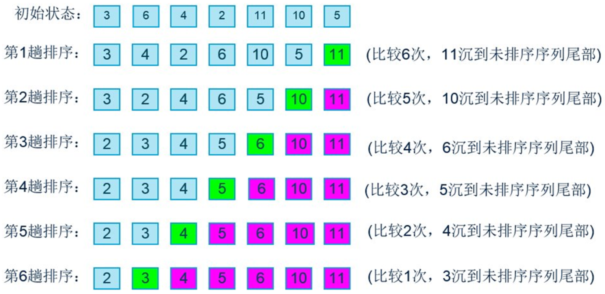
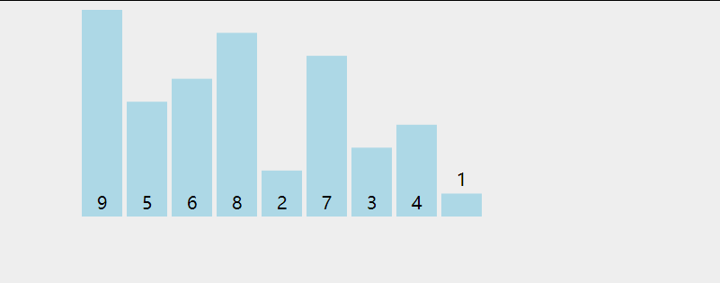
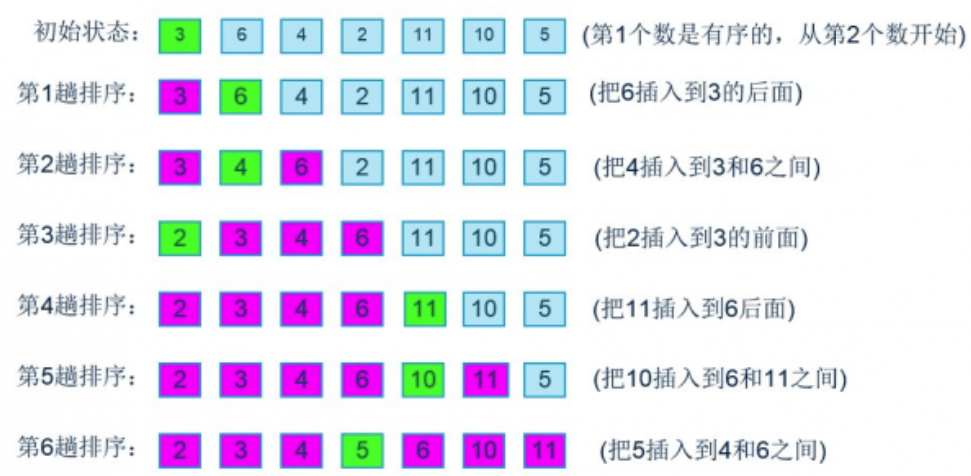
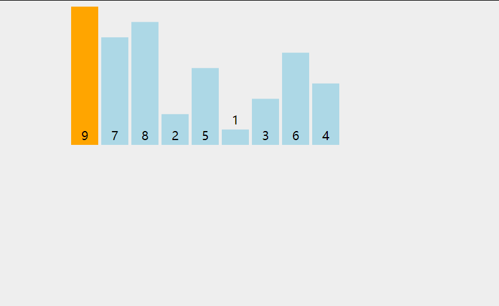

要点：冒泡排序、选择排序、插入排序、希尔排序、快速排序。
一、大O表示法
1.1 大O表示法
在计算机中采用粗略的度量来描述计算机算法的效率，这种方法被称为“大O”表示法。
在数据项个数发生改变时，算法的效率也会跟着改变。所以说算法A比算法B快两倍，这样的比较是没有意义的。
因此我们通常使用算法的速度随着数据量的变化会如何变化的方式来表示算法的效率，大O表示法就是方式之一。
1.2 常见的大O表示形式
| 符号 | 名称 |
|---|---|
| O（1） | 常数 |
| O（log(n)） | 对数 |
| O（n） | 线性 |
| O（nlog(n)） | 线性和对数乘积 |
| O（n²） | 平方 |
| O（2n） | 指数 |
1.3 不同大O形式的时间复杂度

可以看到效率从大到小分别是：O（1）> O（logn）> O（n）> O（nlog(n)）> O（n²）> O（2n）
1.4 推导大O表示法的三条规则
规则一：
用常量1取代运行时间中所有的加法常量。如7 + 8 = 15，用1表示运算结果15，大O表示法表示为$O(1)$；
规则二：
运算中只保留最高阶项。如$N^3 + 3n +1$，大O表示法表示为：$O(N^3)$;
规则三：
若最高阶项的常数不为1，可将其省略。如$4N^2$，大O表示法表示为：$O(N^2)$;
二、排序算法
这里主要介绍几种简单排序和高级排序：
- 简单排序：冒泡排序、选择排序、插入排序；
- 高级排序：希尔排序、快速排序；
此处创建一个列表类ArrayList并添加一些属性和方法，用于存放这些排序方法：
1 | //创建列表类 |
2.1 冒泡排序
冒泡排序的思路
- 对未排序的各元素从头到尾依次比较相邻的两个元素大小关系；
- 如果左边的人员高，则将两人交换位置。比如1比2矮，不交换位置；
- 向右移动一位，继续比较2和3，最后比较 length - 1 和 length - 2这两个数据；
- 当到达最右端时，最高的人一定被放在了最右边；
- 按照这个思路，从最左端重新开始时，只需要走到倒数第二个位置即可；

代码实现思路
两层循环
外层循环控制冒泡趟数：
- 第一次：j = length - 1，比较到倒数第一个位置 ；
- 第二次：j = length - 2，比较到倒数第二个位置 ；
内层循环控制每趟比较的次数：
- 第一次比较： i = 0，比较 0 和 1 位置的两个数据；
- 最后一次比较：i = length - 2,比较length - 2和 length - 1两个数据；
详细过程如下图所示：

动态过程：

代码实现
1 | //冒泡排序 |
测试代码：
1 | //测试类 |
测试结果：
冒泡排序的效率
上面所讲的对于7个数据项，比较次数为：6 + 5 + 4 + 3 + 2 + 1;
对于N个数据项，比较次数为：(N - 1) + (N - 2) + (N - 3) + … + 1 = N (N - 1) / 2；如果两次比较交换一次，那么交换次数为：N (N - 1) / 4；
使用大O表示法表示比较次数和交换次数分别为：O（ N (N - 1) / 2）和O（ N (N - 1) / 4），根据大O表示法的三条规则都化简为：$O(N^2)$;
优缺点
优点：比较简单,空间复杂度较低，是稳定的；
缺点：时间复杂度太高，效率慢
2.2 选择排序
改进冒泡排序
- 将交换次数由$O(N^2)$减小到O(N)；
- 但是比较次数依然是$O(N^2)$；
选择排序的思路
- 选定第一个索引的位置比如1，然后依次和后面的元素依次进行比较；
- 如果后面的元素，小于索引1位置的元素，则交换位置到索引1处；
- 经过一轮的比较之后，可以确定一开始指定的索引1位置的元素是最小的；
- 随后使用同样的方法除索引1意外逐个比较剩下的元素即可；
- 可以看出选择排序，第一轮会选出最小值，第二轮会选出第二小的值，直到完成排序。
代码实现思路
两层循环：
外层循环控制指定的索引：
- 第一次：j = 0，指定第一个元素 ；
- 最后一次：j = length - 1，指定最后一个元素 ；
内层循环负责将指定索引（i）的元素与剩下（i - 1）的元素进行比较；
动态过程：

代码实现
1 | //选择排序 |
测试代码:
1 | //测试类 |
测试结果：
选择排序的效率
- 选择排序的比较次数为：N (N - 1) / 2，用大O表示法表示为：*O（N^2）;
- 选择排序的交换次数为：(N - 1) / 2，用大O表示法表示为：O（N）;
- 所以选择排序的效率高于冒泡排序；
优缺点
优点：一轮比较只需要换一次位置；
缺点：效率慢，不稳定（举个例子5，8，5，2，9 我们知道第一遍选择第一个元素5会和2交换，那么原序列中2个5的相对位置前后顺序就破坏了）。
区别冒泡与选择排序
1.冒泡排序是比较相邻位置的两个数，而选择排序是按顺序比较，找最大值或者最小值；
2.冒泡排序每一轮比较后，位置不对都需要换位置，选择排序每一轮比较都只需要换一次位置；
3.冒泡排序是通过数去找位置，选择排序是给定位置去找数；
2.3 插入排序
插入排序是简单排序中效率最高的一种排序。
插入排序的思路
插入排序思想的核心是局部有序。如图所示，X左边的人称为局部有序；
首先指定一数据X（从第一个数据开始），并将数据X的左边变成局部有序状态；
随后将X右移一位，再次达到局部有序之后，继续右移一位，重复前面的操作直至X移至最后一个元素。
插入排序的详细过程

动态过程：

代码实现
1 | //插入排序 |
测试代码
1 | //测试类 |
插入排序的效率
比较次数：第一趟时，需要的最大次数为1；第二次最大为2；以此类推，最后一趟最大为N-1；所以，插入排序的总比较次数为N (N - 1) / 2；但是，实际上每趟发现插入点之前，平均只有全体数据项的一半需要进行比较，所以比较次数为：**N \ (N - 1) / 4**；
交换次数：指定第一个数据为X时交换0次，指定第二个数据为X最多需要交换1次，以此类推，指定第N个数据为X时最多需要交换N - 1次，所以一共需要交换N (N - 1) / 2次，平局次数为**N \ (N - 1) / 4**；
虽然用大O表示法表示插入排序的效率也是$O(N^2)$，但是插入排序整体操作次数更少，因此，在简单排序中，插入排序效率最高；
2.4 希尔排序
希尔排序是插入排序的一种高效的改进版，效率比插入排序要高。
希尔排序的历史背景
希尔排序按其设计者希尔（Donald Shell）的名字命名，该算法由1959年公布；
希尔算法首次突破了计算机界一直认为的算法的时间复杂度都是$O(N^2)$的大关，为了纪念该算法里程碑式的意义，用Shell来命名该算法；
插入排序的问题
假设一个很小的数据项在很靠近右端的位置上，这里本应该是较大的数据项的位置；
将这个小数据项移动到左边的正确位置，所有的中间数据项都必须向右移动一位，这样效率非常低；
如果通过某种方式，不需要一个个移动所有中间的数据项，就能把较小的数据项移到左边，那么这个算法的执行速度就会有很大的改进。
希尔排序的实现思路
希尔排序主要通过对数据进行分组实现快速排序；
根据设定的增量（gap）将数据分为gap个组（组数等于gap），再在每个分组中进行局部排序；
假如有数组有10个数据，第1个数据为黑色，增量为5。那么第二个为黑色的数据index=5，第3个数据为黑色的数据index = 10（不存在）。所以黑色的数据每组只有2个，10 / 2 = 5一共可分5组，即组数等于增量gap。
排序之后，减小增量，继续分组，再次进行局部排序，直到增量gap=1为止。随后只需进行微调就可完成数组的排序；
具体过程如下：
- 排序之前的，储存10个数据的原始数组为：
- 设初始增量gap = length / 2 = 5，即数组被分为了5组，如图所示分别为：[8, 3]、[9, 5]、[1, 4]、[7, 6]、[2, 0]：
- 随后分别在每组中对数据进行局部排序，5组的顺序如图所示，变为：[3, 8]、[5, 9]、[1, 4]、[6, 7]、[0, 2]：
- 然后缩小增量gap = 5 / 2 = 2，即数组被分为了2组，如图所示分别为：[3，1，0，9，7]、[5，6，8，4，2]：
- 随后分别在每组中对数据进行局部排序，两组的顺序如图所示，变为：[0，1，3，7，9]、[2，4，5，6，8]：
- 然后然后缩小增量gap = 2 / 1 = 1，即数组被分为了1组，如图所示为：[0，2，1，4，3，5，7，6，9，8]：
- 最后只需要对该组数据进行插入排序即可完成整个数组的排序：
动态过程：

图中d表示增量gap。
增量的选择
- 原稿中希尔建议的初始间距为N / 2，比如对于N = 100的数组，增量序列为：50，25，12，6，3，1，可以发现不能整除时向下取整。
- Hibbard增量序列：增量序列算法为：$2^k - 1$，即1，3，5，7… …等；这种情况的最坏复杂度为 $O(N^{3/2})$，平均复杂度为 $O(N^{5/4})$ 但未被证明；
- Sedgewcik增量序列：
以下代码实现中采用希尔排序原稿中建议的增量即N / 2 。
代码实现
1 | //希尔排序 |
这里解释一下上述代码中的三层循环：
- 第一层循环：while循环，控制gap递减到1；
- 第二层循环：分别取出根据g增量gap分成的gap组数据：将index = gap的数据作为选中的第一个数据，如下图所示，gap=5，则index = gap的数据为3，index = gap - 1的数据为8，两个数据为一组。随后gap不断加1右移，直到gap < length，此时实现了将数组分为5组。

- 第三层循环：对每一组数据进行插入排序；
测试代码：
1 | //测试类 |
测试结果：
希尔排序的效率
希尔排序的效率和增量有直接关系，即使使用原稿中的增量效率都高于简单排序。
2.5 快速排序
快速排序的介绍
快速排序可以说是目前所有排序算法中，最快的一种排序算法。当然，没有任何一种算法是在任意情况下都是最优的。但是，大多数情况下快速排序是比较好的选择。
快速排序其实是冒泡排序的升级版；
快速排序的核心思想是分而治之，先选出一个数据（比如65），将比其小的数据都放在它的左边，将比它大的数据都放在它的右边。这个数据称为枢纽
和冒泡排序的不同
我们选择的65可以一次性将它放在最正确的位置，之后就不需要做任何移动；
而冒泡排序即使已经找到最大值，也需要继续移动最大值，直到将它移动到最右边；
快速排序的枢纽
第一种方案：直接选择第一个元素作为枢纽。但是，当第一个元素就是最小值的情况下，效率不高；
第二种方案：使用随机数。随机数本身十分消耗性能，不推荐；
优秀的解决方法：取index为头、中、位的三个数据排序后的中位数；如下图所示，按下标值取出的三个数据为：92，31，0，经排序后变为：0，31，92，取其中的中位数31作为枢纽（当（length-1）/2不整除时可向下或向上取整）：
实现枢纽选择
1 | //交换两个位置的数据 |
数组经过获取枢纽函数操作之后，选出的3个下标值对应的数据位置变为：
动态过程：

快速排序代码实现
1 | //2.快速排序 |
算法的巧妙之处在于通过:
1 | QuickSort(l).concat(c, QuickSort(r)) |
递归调用QuickSort函数实现了枢纽Center左边数据l和右边数据r的排序；
测试代码：
1 | let arr = [0, 13, 81, 43, 31, 27, 56, 92] |
测试结果
快速排序的效率
快速排序最坏情况下的效率：每次选择的枢纽都是最左边或最右边的数据，此时效率等同于冒泡排序，时间复杂度为O（n2）。可根据不同的枢纽选择避免这一情况；
快速排序的平均效率：为$O(N*logN)$，虽然其他算法效率也可达到$O(NlogN)$，但是其中快速排序是*最好的。
Tips: Please indicate the source and original author when reprinting or quoting this article.